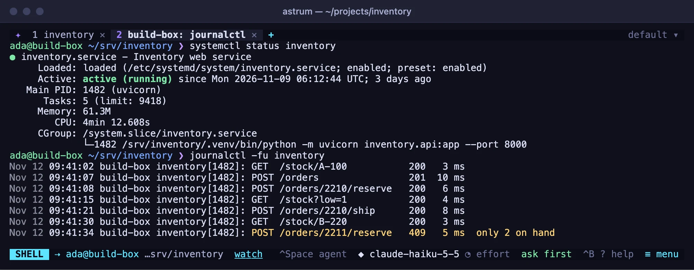
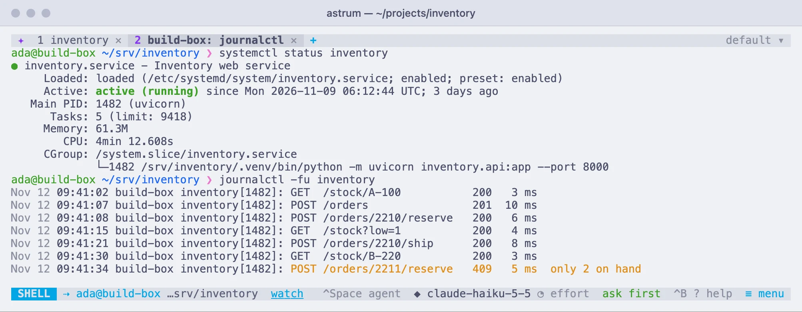
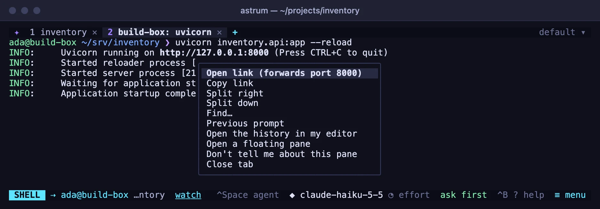
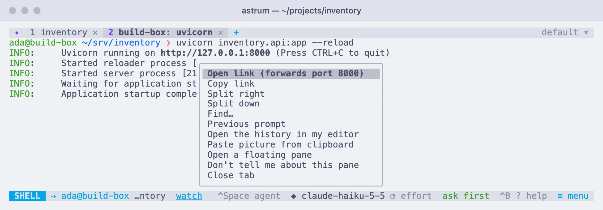
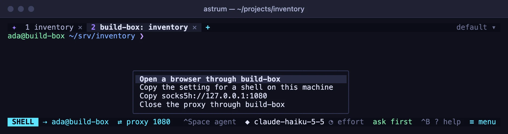
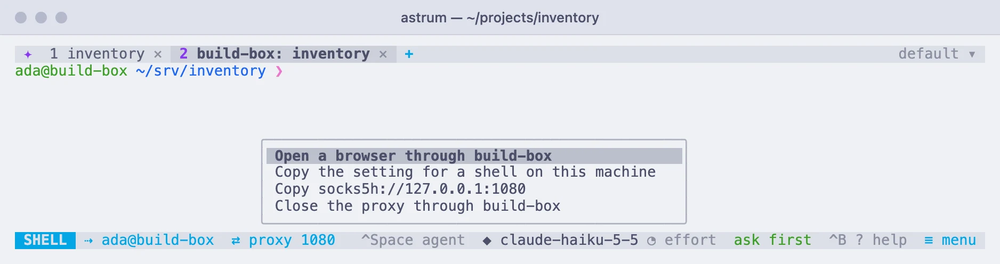
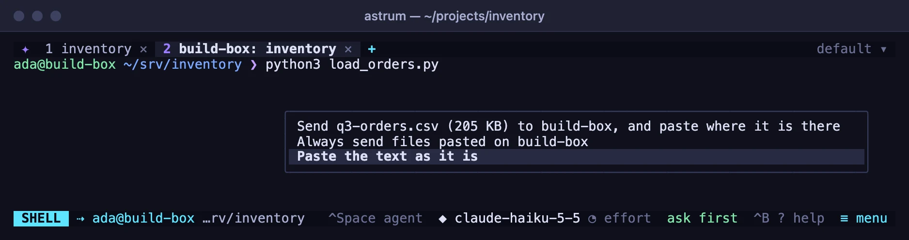
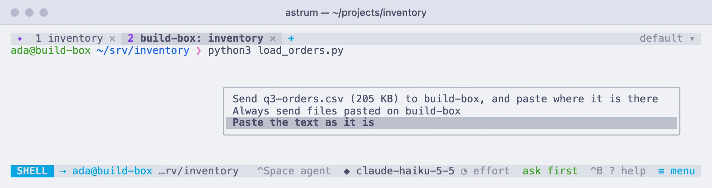

Tabs on other machines
A tab on a server over your own ssh, whose shells stay there when the connection drops, and taking the agent into a shell you reached yourself.
Two ways to work on another machine
| A tab on another machine | ssh in an ordinary tab, with the agent taken in | |
|---|---|---|
| How | ≡ menu → New tab on another machine… | type ssh (or sudo -s, docker exec…) as usual, then click take the agent in |
| Where the shells live | on the other machine, kept by Astrum's program there | in the connection: when it drops, they end |
| A dropped connection | loses nothing; Astrum reconnects by itself | ends the shell there |
| A port there, in your browser here | /forward 3000 (Using a port there from here) | ssh -L, given when you run ssh |
| The network it is on, in your browser here | ≡ menu → Use this machine's network from here (proxy)… (The other machine's network) | ssh -D, given when you run ssh |
| A file of this machine, used there | paste it or drop it on the pane (Giving a file to the other machine) | scp, in another tab |
| Splits | open on the same machine | open on this machine |
| The agent's tools | all of them: commands, and reading, searching and changing files with a diff to approve | the shell only |
| Needs on the other machine | a build of Astrum there (Astrum offers to put one there) | bash, zsh or fish; nothing installed |
The first is the fuller way, wherever there is a build of Astrum for the other machine. The second works almost anywhere you can reach a shell.
Opening a tab on another machine
| Do this | With the mouse | With the keyboard |
|---|---|---|
| New tab on another machine | ≡ menu → New tab on another machine… | Ctrl+B R, or /ssh host in the agent panel |
Astrum asks for the machine, as you would name it to ssh:
web-3
deploy@web-3
-p 2222 web-3
-J jump web-3A name from ~/.ssh/config works, and so do options before the name. Press Enter to open the tab, or Esc to cancel. /ssh web-3 in the agent panel opens it straight away.
Astrum runs your own ssh to get there, so your keys, your jump hosts and your ~/.ssh/config apply as they are. Whatever ssh asks (a password, a new host's fingerprint, a second factor) is shown in the pane, and you answer it there as you would anywhere.


What makes it different
The shells of an ordinary ssh live in the connection: when it goes, they go. A tab on another machine is not like that. Astrum's own program runs on the other machine and keeps the shells there, the way the session server keeps your shells here. The connection only carries what they show and what you type.
A dropped connection loses nothing
When the connection drops (the network goes, the laptop is closed), the pane says the connection was lost; the shell there and whatever runs in it carry on. Astrum reconnects by itself, after 1, 3, 8 and 20 seconds, then every minute. To try again at once, click Try again on the pane, or press Enter in it.
When the connection is back, what the shells wrote in the meantime is there. After a short absence the pane simply carries on: the last 4 MB each shell wrote is kept for that. After a longer one, the screen and its history are shown as they now stand.
So does restarting this machine
The tab is saved with the session, and finds its shells again when the session next starts, after a crash or a reboot here included. astrum kill ends them, as it ends the shells here; the tab still comes back, in a new shell in the same directory, under what the old one had shown. See Sessions that come back.
It is an ordinary tab
- Split it, and the new pane is on the same machine, in the same directory, over the connection that is already there.
- Scrollback, search, copying, links and pictures work as in any other tab. See Tabs and panes.
- The tab says which machine it is on (
web-3: src), and so does the status bar (⇢ deploy@web-3 ~/src). - A new tab (
+) opened from it is on this machine. Open another on the same machine with New tab on another machine… again. - Closing the tab, or a pane of it, ends its shell there.
The agent has everything there that it has here
The agent's commands run in the shell there, where you watch them. Reading and searching files, and changing them with a diff for you to approve first, are carried out there by Astrum's program. An AGENTS.md in the project there is read along with your own rules from here, and the agent is offered your own skills. The model, your API keys and the conversation stay on your machine. See The agent.
Using a port there from here
Experimental, in 0.12.0. A program on the other machine that listens only on that machine itself, a development server say, cannot be opened in the browser on yours. Forward its port and it can: Astrum opens the same port on your machine and carries every connection made to it to the port there, over the connection the tab already has. No second ssh is run, nothing is signed in to again, and nothing on the server has to allow it.
| Do this | With the mouse | With the keyboard |
|---|---|---|
| Open an address the server printed | right-click http://localhost:3000 in the pane → Open link, or hold Ctrl and click it | |
| Forward a port | in a tab on that machine, ≡ menu → Forward a port from this machine…, then the port (3000, or 8888:80 to choose the port here) | /forward 3000 in the agent panel |
| Open it, copy its address, or stop it | click ⇄ 3000 on the status bar | /forward 3000 stop |
| See what is forwarded | the status bar shows the ports of the tab's machine | /forward |
The shortest way is the link itself. When a program in the tab prints an address of its own machine (http://localhost:5173/, 127.0.0.1, 0.0.0.0 or [::1]), opening that link forwards the port if it is not forwarded yet and opens your browser at the address on your machine, with the path and the rest as they were. The right-click menu says so first: Open link (forwards port 5173). A link to anywhere else is opened as it stands, and so is every link in a tab on your own machine.


For a port asked for by command or from the menu, Astrum answers with the address on your machine:
Port 3000 on web-3 is now http://localhost:3000 on this machine.- The port here is the same number when it is free. When something on your machine is already using it, Astrum takes the next one that is free and says so (
port 3000 is in use here); the status bar then shows both, the port on your machine first and then where it leads:⇄ 3001→3000. - A port below 1024 takes root to open on your machine, so it is given its usual stand-in without your asking:
/forward 80puts port 80 there athttp://localhost:8080here, and says why. - A port of your own choosing:
/forward 8888:80puts port 80 there at 8888 here. The order is the onessh -Luses, the port here first./forward 80 8888says the same with a space, the port there first. A port that is already forwarded stays where it is: stop it first to have it at another. - An address works in place of the number:
/forward localhost:5173, or the wholehttp://localhost:5173/as the server printed it. - Nothing has to be listening yet. The port here is open at once, and Astrum says so if nothing answered there; the address works as soon as something does.
- A dropped connection closes whatever was using the port; the port itself stays, and works again as soon as Astrum has reconnected.
- It ends when you stop it, or when the last tab on that machine is closed. Whatever was using the port is closed with it. A session that is restarted does not bring its ports back: forward them again.
Things to know:
- The port here is open to your machine only, not to your network. Any program on your machine can use it, though, and so can a page in your browser: a database or an admin page that was reachable only from the server is, while it is forwarded, reachable from your machine too. Forward what you mean to use, and stop it afterwards.
- A link's
localhostis the other machine itself. For a port of a machine beyond it, see A port of a machine it can reach. - The agent cannot forward a port. It is done by you, with the command or the mouse.
- It needs Astrum 0.12.0 or later on both machines. Astrum says so when the one there is older, and how to replace it: see Troubleshooting.
- A program that insists on its own port number in what it sends (a sign-in that redirects to
localhost:3000, say) will not work at another number here. Free the port on your machine and forward it again. - Connections share the line with the shells. Each is held to a quarter of a megabyte ahead of what the other end has taken, so a large download slows down rather than making what you type wait; it is still not the way to move large files.
- TCP only.
localhostin a link is taken to be the tab's machine. A shell there that has gone on to a third machine, or into a container with a network of its own, prints addresses that are not that machine's: those are not reached.- A machine reached from itself (
ssh localhost) has one set of ports, so the port here is never the one it stands for.
A port of a machine it can reach
Experimental, in 0.13.0. The other machine can often reach machines yours cannot: a database beside it, an internal site, a container running on it. Name the machine and the port and Astrum has the connection made from there, with the name looked up there:
/forward 5432:db.internal:5432Port 5432 on db.internal, reached through web-3, is now http://localhost:5432 on this machine.| You type | What it means |
|---|---|
/forward db.internal:5432 | port 5432 of db.internal, at the same number here if it is free |
/forward 5433:db.internal:5432 | the same, at 5433 here: the port here first, as ssh -L has it |
/forward 8080:172.17.0.2:80 | port 80 of a container on that machine, by its address there |
/forward db.internal:5432 stop | ends it |
The box that ≡ menu → Forward a port from this machine… opens takes the same. The status bar shows where such a port leads (⇄ db.internal:5432, or ⇄ 5433→db.internal:5432 when the port on your machine is another number), and its menu opens, copies or stops it like any other.
- The name is the other machine's name for it. A name only that network knows works, and one only your machine knows does not.
- The port here is open at once. If nothing answered when Astrum tried it from there, it says so and why (the name is not known there, the connection was refused).
- It carries any TCP connection: a database client,
sshto a machine behind a gateway (ssh -p 2222 localhostafter/forward 2222:inner:22). - A website is the awkward case. Your browser asks
localhost:8080for the page, and a site that goes by its own name, or byhttpswith a certificate for that name, may refuse or redirect. For websites, use the proxy, which lets the browser ask for the site by its real name. - It needs Astrum 0.13.0 or later on the other machine. Astrum says so when the one there is older.
The other machine's network, through a proxy
Experimental, in 0.13.0. A proxy makes the whole network the other machine is on reachable from yours, not one port at a time: internal websites by their own names, with names your machine cannot look up. It is what ssh -D does, over the connection the tab already has, with nothing to set up.
| Do this | With the mouse | With the keyboard |
|---|---|---|
| Open the proxy | in a tab on that machine, ≡ menu → Use this machine's network from here (proxy)… | /proxy in the agent panel |
| Browse that network | click ⇄ proxy 1080 on the status bar → Open a browser through … | |
| Open a link to an internal site that a program there printed | right-click the link → Open link through … | |
| Use it from a shell on your machine | click ⇄ proxy 1080 → Copy the setting for a shell on this machine, and paste it there | |
| Close it | click ⇄ proxy 1080 → Close the proxy through … | /proxy stop |


The menu has an entry for each browser it can start this way: Open Brave through …, Open Chrome through …, and likewise Chromium, Edge and Vivaldi. The browser is started with the proxy, and with a profile of its own kept under Astrum's data folder. The one you choose is listed first next time, and is the one a link is opened in. Your own browser windows, your own profile and the system's network settings are not touched: only that window goes through the other machine. It opens at a page that says so (This window goes through web-3), so that it is not mistaken for your other windows. In it, type an internal address as you would at work.
For a shell on your machine, the setting that is copied looks like this, and applies to what is started from that shell afterwards:
export ALL_PROXY=socks5h://127.0.0.1:1080 HTTPS_PROXY=http://127.0.0.1:1080For one command, curl -x socks5h://127.0.0.1:1080 https://wiki.internal/ does the same. The h in socks5h has names looked up on the other machine, which is the point.
- It is at port 1080 when that is free, the usual port for such a proxy, and the next free one when it is not.
/proxy 1081chooses it. While the session lasts a machine's proxy comes back at the port it had, and no other machine's is given that port: a browser window left open goes on through the machine it says it does. - It speaks SOCKS5, and
CONNECTfor programs that know onlyhttps_proxy. It passes on no ordinary web request: that is what a page in your browser could send to a port on your machine, and a page must not be able to reach into another network that way. - It is open to your machine only. Any program on your machine can use it while it is open, as with a forwarded port: open it when you need it and close it afterwards.
- A browser managed by an organization (its settings page says so) may have its proxy laid down for it, whatever it is started with. If pages do not load in one, choose another from the menu.
- A browser other than those named can be pointed at it by hand: SOCKS5, host
127.0.0.1, the port shown, with names looked up by the proxy (in Firefox, "Proxy DNS when using SOCKS v5").ASTRUM_BROWSER_TOOLnames another program to start. - Everything shares the tab's connection. Pages load well; a large download is slower than over a connection of its own.
- TCP only, so no UDP, and nothing that needs the other machine to connect back to you.
- It ends when you close it, or with the last tab on that machine. The agent cannot open one.
- It needs Astrum 0.13.0 or later on the other machine, and the machine's administrator can forbid it: see below.
For whoever runs the machine
A port of a machine beyond, and a proxy, carry traffic into your network, inside Astrum's own connection, where the ssh server's AllowTcpForwarding has no say. You can say what Astrum may carry through a machine, in a file there that only root can write:
# /etc/astrum/policy.toml
forward = "local"forward | What is allowed through this machine |
|---|---|
"any", or no file | ports of the machine itself, ports of machines it can reach, and a proxy |
"local" | ports of the machine itself only: no machine beyond it, and no proxy |
"none" | nothing |
/etc/astrumis root's on a machine set up as machines are, so only an administrator can write the file. The rule in it is kept whoever the file belongs to: a rule can only shut what is open without one.- A file that cannot be read or understood allows nothing, so that a slip of the hand does not open what was meant to be shut. It must be readable by the people it is a rule for (mode 644).
- It is read each time a connection is asked for: a change takes effect at once, for connections made from then on. Someone refused under the old rule is told when more is allowed.
- The person who asked is told, in words:
web-3 says no: this machine allows only its own ports to be forwarded….
This is a rule kept by a program the user runs, for users who mean to keep the rules. Someone who does not could run another program. What stops that is what always did: a firewall on what the machine may connect to.
Giving a file to the other machine
Experimental, in 0.13.0. Drop a file on your terminal, or paste one, and the terminal types the file's path. In a tab on another machine that path means nothing: the file is on yours. Astrum sends the file over the connection the tab already has and pastes where it now is there, so the command you were typing, or the agent you were talking to on that machine, gets a path it can open.
| Do this | With the mouse | With the keyboard |
|---|---|---|
| Give a file to the other machine | drop it on the terminal while a pane on that machine has the keyboard, then click Send… | copy the file and paste it, then ↓ and Enter |
| Give it a screenshot your terminal pastes as a file | paste it: it is sent without a question | the same |
| Give it the picture on the clipboard when pasting does nothing | right-click the pane → Paste picture from clipboard | |
| Stop a file that is on its way | click ↑ 42% name on the status bar → Stop sending | |
| Stop being asked for one machine | choose Always send files pasted on … when asked | |
| Be asked again | ≡ menu → Ask before sending files to … |
When what you paste is nothing but the path of a file on your machine (or several), Astrum asks before anything is sent:


Send screenshot.png (212 KB) to web-3, and paste where it is there
Always send files pasted on web-3
Paste the text as it isThe first sends the file and then pastes its path there, something like ~/.cache/astrum/received/3fa9c1d2e4/screenshot.png, written out in full. The last pastes exactly what you pasted, for a path you meant as it is written (/etc/hosts is on both machines). The last is the one that is marked when the menu opens, so Enter after a paste, pressed out of habit, sends no file anywhere. Closing the menu with Esc pastes nothing.
- Why it asks. Text copied from a page can hold a path you never looked at. Pasted into a shell on another machine without a question,
~/.ssh/id_rsawould put your private key there. Choose Always only for machines you would hand your files to. - What is not asked about. A picture in a temporary folder, which is what a terminal writes when you paste a screenshot: its path can mean nothing else. It has to be such a file itself: a path that climbs out of the temporary folder, or a name there that is a link to a file kept elsewhere, is asked about.
- What is always asked about, whatever you said before: anything over 50 MB, and a path that a program in a pane put on the clipboard. Programs can do that, and one on the other machine could name a file of yours it would like sent. Astrum says so when it happens.
- Where it is kept. In
~/.cache/astrum/received/on the other machine, in a folder only you can read. The name is kept, with spaces and other characters a shell would trip over replaced by_, so the path can be pasted as it stands. The same file sent twice is one file there and is not sent again. Files not asked for in seven days are cleared away. - It arrives whole or not at all. The file's SHA-256 is checked there before it is given its place. If the connection drops on the way, nothing is pasted and Astrum says so: paste it again.
- Typing does not wait behind it. A file goes in small pieces beside what the shells write. The status bar shows how far it has got.
- Paste picture from clipboard is for terminals that paste nothing when a picture is what you copied. It also works in a tab on your own machine, where the picture is written to a file under
~/.cache/astrum/clipboard/, which only you can read, and that path is pasted. Those are cleared away after a day.
Things to know:
- Files only, not folders, and none over 2 GB: for those,
scporrsyncin another tab. - It needs Astrum 0.13.0 or later on the other machine. With an older one the path is pasted as it is, and Astrum says why.
- It is for a paste into the shell of a tab on another machine. It does not happen for an
sshtyped in an ordinary tab, where Astrum has no connection of its own. - The agent cannot send a file. A file goes because you pasted or dropped it.
- Only a paste is looked at. A terminal that types a dropped file's path as if you had typed it, without marking it as a paste, gives Astrum nothing to go by.
If Astrum is not on the other machine
The first time you open a tab on a machine without Astrum, the pane says so and asks before doing anything:
Yes, copy it there(or y): Astrum takes the release build for that machine's kind of system, of the same version as the Astrum you are running, and verifies its SHA-256 checksum on your machine. It then sends it over the connection that is already open, to~/.local/bin/astrumthere. The copy is run once before it is put in place; if it will not run, nothing there is changed.No(or n): nothing is touched. Close the tab, or put Astrum there yourself and try again.
That is one file in your home folder there: no root, no package manager, and the other machine needs no way out to the internet, because the file comes over your ssh. On the machine, Astrum looks for ~/.local/bin/astrum first and then for an astrum on the PATH, so a copy you installed there yourself is used as it is.
The build comes from the release on GitHub the first time, and is kept on your machine for the next one, in ~/.local/share/astrum/builds/.
Taking the build from somewhere else
download_base in the config file names a mirror, or a folder on your machine, to take the build from instead of GitHub, exactly as ASTRUM_DOWNLOAD_BASE does for the install script:
download_base = "file:///Users/me/astrum-release"It is an https:// address, or file:/// and a folder. Either way it must hold the release file for that machine (astrum-linux-amd64, say) and a SHA256SUMS that lists it; the checksum is checked as always, and a file that does not match is not copied. The environment variable ASTRUM_DOWNLOAD_BASE, set before the session starts, does the same and takes precedence over the config file.
A development build of Astrum, one built from source between releases, has no release to copy. Put Astrum on the other machine yourself, or build it for that machine and point download_base at a folder holding it and a SHA256SUMS for it.
Two versions of Astrum
The two sides do not have to be the same version. Each says which number of their common language it speaks, a number that changes far less often than the version does, and any two versions with the same number work together.
- If the Astrum there is older and speaks an earlier one, Astrum offers to put its own version in
~/.local/binthere, again only on a yes. Shells the older one is keeping stay running under it, but cannot be shown by this version. - If the Astrum there is newer, nothing is replaced: Astrum says to update this machine.
Logging out of the other machine
The program that keeps the shells there is started as one of its own, which the connection closing does not take with it. On most systems that is enough to outlast a logout too.
A Linux system set to end a user's programs at logout (KillUserProcesses=yes in systemd's login settings) needs lingering turned on there, the same switch the login service relies on:
loginctl enable-lingerWith it on, the program runs under your own systemd there and stays. Astrum tells you when a machine is set to end your programs and lingering is off.
The program stops by itself twenty seconds after its last shell has ended. A restart of that machine ends its shells, as it would anywhere; the tab comes back in a new one.
Where a tab on another machine cannot be used
On these, running ssh in an ordinary tab and taking the agent in still works:
- a machine where you may not run a program of your own, or keep one running in the background: some shared hosts, restricted shells, and containers that are torn down when you disconnect;
- a system there is no build for: anything but Linux on x86-64 or ARM64 and macOS on Apple silicon (Astrum says so, and suggests the other way);
- an account whose
sshsetup forces a command of its own (RemoteCommandin your config,ForceCommandon the server).
Things to know about tabs on other machines
sshis run with the environment the session server was started with, so it uses the SSH key agent (SSH_AUTH_SOCK) from then. A server started as a login service has a bare environment, without one.ASTRUM_SSH, set before the session starts, names a program to run in place ofssh. It is given the same argumentssshwould be:-T, what you typed for the machine, and the one command Astrum runs there.- Shells there belong to no one connection, so they have no agent forwarding and no X forwarding.
- After a long absence, or when this machine was restarted, the screen and its history are shown as they now stand; pictures are not carried over then, and links lose their targets.
- A tab closed while its connection is down leaves its shell running there until this session next reaches that machine, when it is ended.
- Each session here sees only its own shells there, even when several reach the same machine.
- A machine you do not trust can lie to you and read what you type, as with any
ssh. The agent's file work there is done by whatever answers as Astrum on that machine.
Taking the agent into a shell you reached
This is for a shell you reached yourself, from an ordinary tab: ssh to a server, docker exec into a container, sudo -s, a shell on the far side of a jump host. The agent works in the shell Astrum started in the pane; when that shell has taken you somewhere else, the agent can come with you.
| Do this | With the mouse | With the keyboard |
|---|---|---|
| Take the agent in | click take the agent in on the status bar, or ≡ menu → Take the agent into this shell (ssh, sudo…) | Ctrl+B i, or /here in the agent panel |
The status bar offers take the agent in by itself while the pane is running a program that usually ends in another shell: ssh, mosh, autossh, sshpass, et, telnet, docker, podman, kubectl, oc, nsenter, lxc, incus, machinectl, toolbox, distrobox, vagrant, sudo, su, doas, nix-shell, chroot, or a bash, zsh or fish started inside the pane's own. For anything else that ends at a shell prompt, use the menu entry or the key.
What happens
Astrum types a couple of lines into the shell you have reached, which set up there what it set up in your own shell: the marks that say where each command starts, how it ended, and which directory the shell is in. The lines are cleared from the pane once they have done their work. Astrum then says the agent works in that shell, and the status bar shows whose shell it is and its directory there (⇢ deploy@web-3 /srv/app).
From then on the agent's commands run in that shell, where you watch them as always, and it is told it is on another machine and which. The model, your API keys and Astrum itself stay on your own machine. Leave the shell (exit, or the connection dropping) and the agent is back in your own. It works a second level in too: taken into a server, then into a container on it.
Things to know about taking the agent in
- Nothing is installed or written on the other machine. What is typed lasts as long as that shell does, and has to be done again for the next one.
- It needs bash, zsh or fish there, sitting at a prompt. Any other shell is left alone, and Astrum says so. A full-screen program in the pane has to be left first.
- The agent has no file tools there, only the shell: it reads with
catandgrepand writes with a here-document. So there is no diff to approve before a file changes; you approve the command that changes it. - If the shell there is busy, the agent waits or asks. It cannot run something beside it, as it can on your own machine.
- In the agent's work there, your own skills are offered; a script one of them brings is written there by the agent when it is needed.
- A machine you do not trust can lie. The marks from the shell there carry a secret that was typed into it, which whoever runs that machine could read and use to tell the agent a command went otherwise than it did. The secret of your own shell is never sent anywhere.
- If you have not taken the agent in and ask it to run something while
sshhas the pane, the command runs on your own machine in a background shell, as it would for any busy pane, and the agent is told so in as many words.
If Astrum says nothing there answered, the shell you reached did not answer the line it typed: it is not at a prompt, or it is not a shell (a database console, a pager). The line may still be sitting there; clear it with Ctrl+U or Ctrl+C. See Troubleshooting.